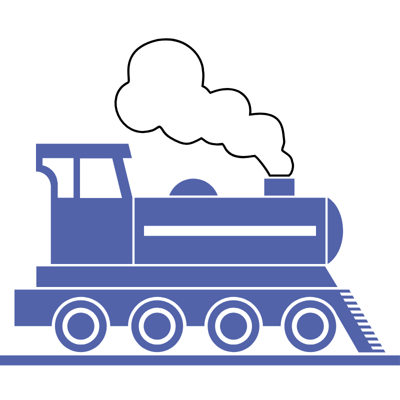

Última manutenção:
20/09/2024
189 dias atrás
189 dias atrás
Próxima manutenção:
20/09/2025
175 dias faltando
175 dias faltando
RELATÓRIO
10/02/2025
Distância:
20KM

Tempo médio:
1h30 min

Tipo de Combustivel
Elétrico
Número de estações:
9

estações
Número de vagões:
4
vagões

Velocidade Média:
50 km/h
Média de Horários mais utilizados:
TIPO: CARGA Horário mais utilizado
Ponto de Partida: Jardim Paraíso
Destino Final: Zona Industrial Norte
Regiões onde ele Passa: Jardim Paraíso, Jardim Sofia, Rio
Bonito, Zona Industrial Norte
Capacidade Máxima de Transporte: 3 toneladas.